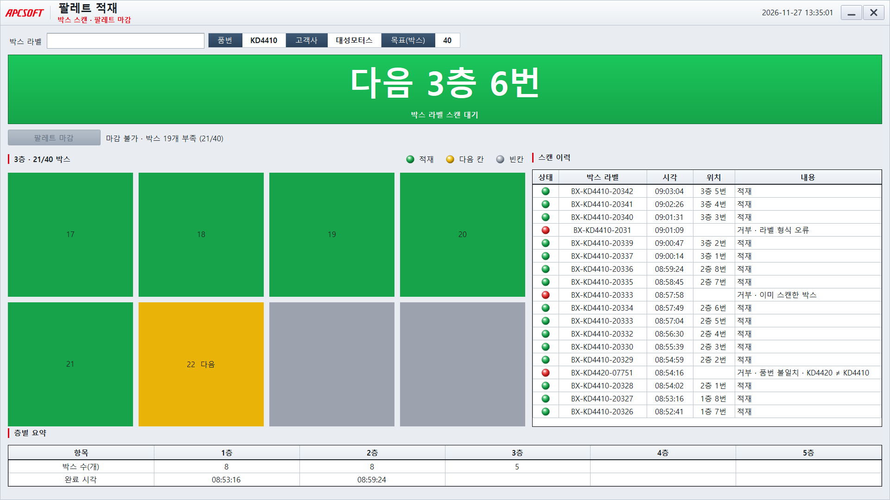
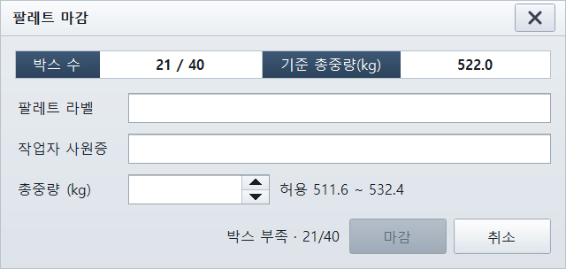
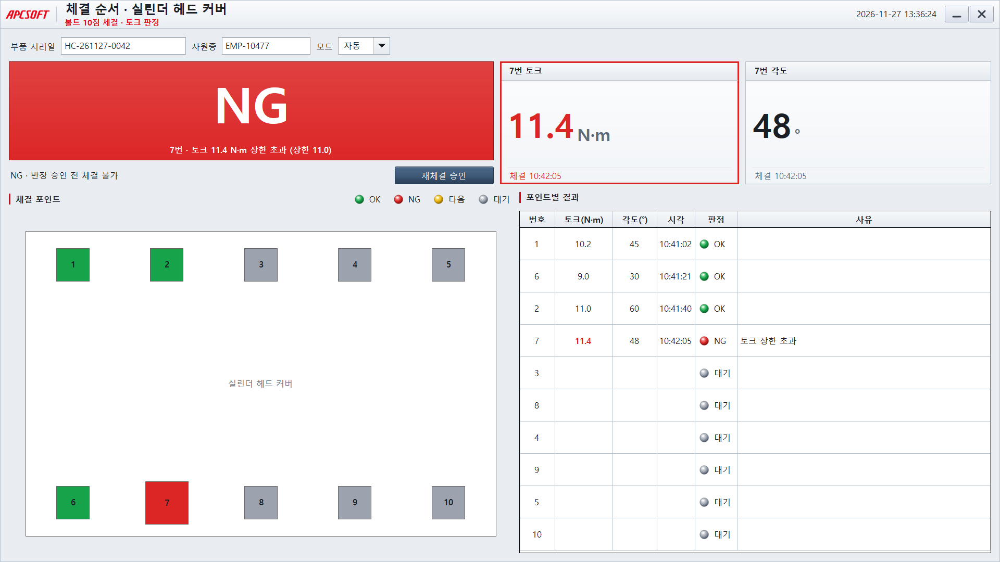
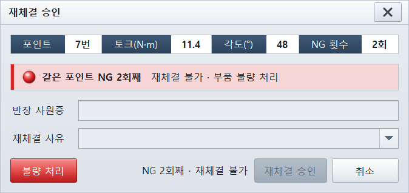
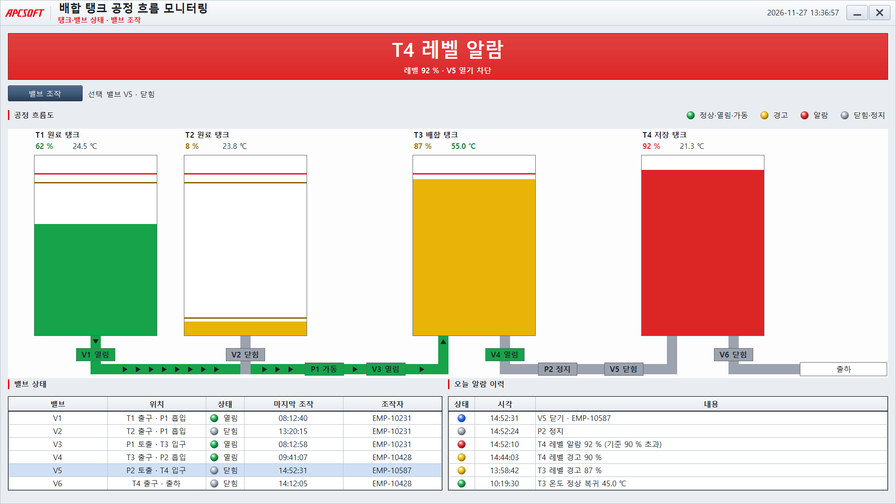
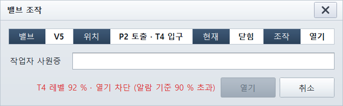

R3 뒤에 고친 것은 두 가지입니다. ApcInfoStrip.PreferredWidth를 추가했고, dialog가 정보판 폭에 맞춰 스스로 넓어지게 했습니다(1.30.0.0). 그 사이 스킬 지침·XML 설명·api.md를 영문으로 바꿨습니다. 같은 화면 3종(팔레트 적재 · 체결 순서 · 탱크 흐름도)을 R3와 같은 프롬프트로 다시 시연했습니다. 세 시연 모두 빌드 경고·오류 0, render 점검 0건으로 끝났습니다. dialog 폭을 손으로 넓히는 우회는 한 건도 없었습니다.
| 수정 | M1 | M2 | M3 | 결과 |
|---|---|---|---|---|
1.30 PreferredWidth + dialog 자동 넓힘 | ✓ | ✓ | ✓ | 세 dialog 모두 폭 지정 코드가 없는데도 정보판 2~4쌍이 잘리지 않음(M2·M3 4쌍). M1은 메인 작업 지시 줄에 PreferredWidth를 직접 씀. R3-M2의 폭 넓히기 우회 사라짐 |
1.29 ScanOnly | ✓ | ✓ | ✓ | 스캔 칸 전부 ScanOnly. 스캔값과 칸 글자를 비교하는 직접 구현 없음 |
| 1.29 채움 위 글자색 · 값마다 Label | ✓ | ✓ | ✓ | 칸·볼트 위 글자는 테마 Text. M3 탱크 제목 레벨·온도를 값마다 판정색으로(T3 87 % 노랑, 55.0 ℃ 초록) |
1.28 Accepts · Clear/HasValue | ✓ | ✓ | — | M2 스캔 두 칸 Accepts, M1 총중량·M2 수동 토크 빈칸 시작 |
| 지침 영문 번역 | ✓ | ✓ | ✓ | 번역 뒤 첫 시연. 점수·도구 횟수가 R3와 같은 수준이고 지침을 잘못 읽은 흔적 없음. 토큰 합 415k → 374k |
| 회차 | APC.UI | M1 | M2 | M3 | 합 | 토큰 합 |
|---|---|---|---|---|---|---|
| 1127-M | 1.27 | 19 | 19 | 19 | 57 | 413k |
| R | 1.28.0 | 19 | 20 | 19 | 58 | 389k |
| R2 | 1.28.1 | 20 | 19 | 19 | 58 | 376k |
| R3 | 1.29.0 | 19 | 19 | 19 | 57 | 415k |
| R4 | 1.30.0 | 19 | 19 | 19 | 57 | 374k |
10항목 × 2점(✓ 2, △ 1). 2번은 스캔과 Primary 하나가 판정판 바로 아래에 있는지를 봅니다. 9번은 경계가 입력값에만 있으면 판정 코드로 확인합니다. 샘플 값끼리의 정합성은 보지 않습니다.
| 시연 | 시간 | 도구 | 토큰 | R3 대비 |
|---|---|---|---|---|
| M1 팔레트 | 3분 25초 | 18 | 117k | +1k |
| M2 체결 | 4분 47초 | 19 | 125k | −7k |
| M3 탱크 | 5분 25초 | 22 | 132k | −35k |
| 합 | 13분 37초 | 59 | 374k | −41k |
시연 에이전트 3개의 토큰만 셌습니다(하네스 집계). 채점·보고서를 만든 메인 세션 토큰은 집계할 수단이 없어 넣지 않았습니다. M3는 R3에서 도구를 47회 썼는데, 화살표 잘림·CurrentRow 우회가 없어지면서 22회로 줄었습니다.
두 번 이상 나온 것만 손볼 곳으로 올립니다. docs/1128.md의 기존 할 일과 겹치는 것은 번호를 붙였습니다.
| 결과 | 나온 시연 | 판단 | 메모 |
|---|---|---|---|
| 체결 도식 가운데가 크게 빔 (1128 #2) | M2 · R-M2 · R2-M2 · R3-M2 · R4-M2 | 손볼 곳 | 5회 연속 6번 △. 이번에도 볼트 크기 상한이 64 px(Math.Min(Px(64), w/12, h/5))이고 위아래 두 줄에만 놓음. 지침에 "요소 크기는 영역에 비례"하라는 기준이 없음 |
| 선·상자 겹침이 점검에 걸려 배관을 토막으로 끊음 | R3-M3 · R4-M3 | 손볼 곳 (새로 2회) | 처음 render 36건 중 다수. 6 px 이하 선만 예외라 22 px 배관이 밸브·펌프와 겹침으로 잡힘. 그래서 밸브 자리를 비운 토막 Label로 나누고 Resize마다 좌표를 다시 계산함. 그 결과 닫힌 V2의 회색 토막이 초록 본관을 끊는 것처럼 보임. M2도 볼트를 윤곽의 형제로 두었다가 10건 걸려 자식으로 옮김. "틀 안 채움 = 자식" 규칙이 점 요소에도 해당하는지 지침이 불분명함 |
| 상태별 dialog를 render할 방법 없음 | R2-M2 · R3-M2 · R4-M2 | 관찰 | 같은 화면에서만 3회. 이번에는 NG 2회째 막힌 상태만 PNG로 보고 정상 승인 상태는 확인하지 못함. 다른 화면에서도 나오면 손볼 곳으로 |
| 고정 행 표 옆 표의 높이 맞추기 | R4-M3 (R-M1 · R3-M1과 같은 뿌리) | 관찰 | 1128 #1(5행 FillRows 과대)은 이번에 나오지 않음. M1이 층별 요약을 눕혀 Fill 아래 Dock = Bottom으로 둠. 대신 M3는 6행 밸브 표 옆 알람 이력을 6행으로 줄여 높이를 맞춤(실사용에서는 스크롤바가 생김). M1은 도식 옆 빈 칸을 채우려고 요청에 없는 스캔 이력 표를 추가함 |
| 자동 모드 Primary 필요 여부 | R3-M2 · R4-M2 | 관찰 | 두 번 다 프롬프트의 "Primary 하나" 문장 때문에 자동 모드에도 [체결값 판정] 버튼을 둠. 지침보다 프롬프트 쪽 문제에 가까움 |
| 조립 도식 요소 간격이 들쭉날쭉 | R3-M3 · R4-M3 | 관찰 | 둘 다 탱크 사이 가로 간격이 고르지 않아 6번 △. 1128 #2(요소 크기를 영역에 비례)와 같은 기준으로 함께 다룰 수 있음 |
| 판정판 번호와 도식 칸 번호가 다름 | R4-M1 | 편차 | 판정판은 "다음 3층 6번"(층 안 순번)인데 칸은 전체 순번 "22 다음". R3는 "22번 칸"으로 맞았음. 이 때문에 1번 △ |
| 기타 1회 | R4 | 편차 | 판정판을 Columns 셀에 넣을 때 아래 버튼을 넣는 예시 없음(M2) · 모드 전환에 탭과 콤보 중 무엇을 쓸지 기준 없음(M2) · 탱크 채움 색 규칙 없음(M3) · Bottom 줄 도우미 없음(M3) |
1128 #3 ApcGrid.CurrentRow는 이번에 재현할 기회가 없었습니다. M3가 샘플에서 V5 행을 직접 선택한 상태로 시작했기 때문입니다.


| # | 항목 | 점수 | 근거 |
|---|---|---|---|
| 1 | 3초 정보 | △ | 판정판 "다음 3층 6번"(층 안 순번)인데 도식 칸은 전체 순번 "22 다음" — 같은 칸을 두 번호 체계로 부름(R3는 "22번 칸"으로 일치) |
| 2 | 주 동작 | ✓ | 판정판 바로 아래 Primary 하나 + 이유 |
| 3 | 메인 막기 | ✓ | 마감 꺼짐 + 이유, 거부 스캔 NG + 경고창 |
| 4 | dialog 차단 | ✓ | "박스 부족 · 21/40" + [마감] 꺼짐, ScanOnly |
| 5 | 새 레이아웃 | ✓ | 2×4 칸 + 범례, 제목 진행 |
| 6 | 레이아웃 마무리 | ✓ | 5행 FillRows 사라짐(눕혀 아래 줄), dialog 정보판 잘림 없음 |
| 7 | 빌드·점검 | ✓ | 0/0, 0건 |
| 8 | 요청 항목 | ✓ | 전부(+스캔 이력) |
| 9 | 경계값 | ✓ | WeightInRange >=/<= |
| 10 | 지침 피드백 | ✓ | Fill 옆 빈 칸, 막는 위치, 대기 판정판 색 |
3분 25초, 도구 18회, 토큰 117k.
1) 화면 — MainForm(out\MainForm.png), PalletCloseDialog(out\PalletCloseDialog.png). Views/PalletBoard.cs(Panel + Label 8개), 기준값 Data/PalletRules.cs. 빌드 0/0, 점검 0건(첫 render 스캔 이력 스크롤바 1건 → 샘플 줄여 해결).
3) UX 결정 — 스캔 줄(+ 작업 지시 ApcInfoStrip, PreferredWidth 사용) → 판정판 "다음 3층 6번" → Primary [팔레트 마감](꺼짐 + "마감 불가 · 박스 19개 부족 (21/40)"). 도식 2×4, 범례. 층별 요약은 층을 열로 눕혀 Fill 아래 Dock = Bottom. 요청에 없는 스캔 이력 표를 도식 옆에 추가. dialog 라벨·사원증 ScanOnly, 총중량 빈칸 시작, 폭 수동 조정 없음.
5) 모호했던 점 — 도식 옆 Fill 칸에 둘 것이 지침에 없어 스캔 이력 표 추가. 요청 "dialog에서 막기" vs 지침 "화면이 막기" → 둘 다. 대기 판정판 Run vs Stop.


| # | 항목 | 점수 | 근거 |
|---|---|---|---|
| 1 | 3초 정보 | ✓ | 판정판 "NG" + 7번 상한 초과 사유 |
| 2 | 주 동작 | ✓ | 판정판 바로 아래 Primary 하나 + 이유 |
| 3 | 메인 막기 | ✓ | 스캔 전 꺼짐, 순서 오류 거부, 승인 전 체결 불가 |
| 4 | dialog 차단 | ✓ | NG 2회째 승인 꺼짐 + 불량 처리 안내, 정보판 잘림 없음 |
| 5 | 새 레이아웃 | ✓ | 윤곽 안 볼트 10개 + 범례 |
| 6 | 레이아웃 마무리 | △ | 볼트 상한 64 px · 위아래 두 줄 → 윤곽 가운데가 크게 빔 (5회 연속) |
| 7 | 빌드·점검 | ✓ | 0/0, 0건 |
| 8 | 요청 항목 | ✓ | 전부 |
| 9 | 경계값 샘플 | ✓ | 9.0/30, 11.0/60 |
| 10 | 지침 피드백 | ✓ | 자식 배치 범위, 판정판+버튼 셀, 상태별 dialog render |
4분 47초, 도구 19회, 토큰 125k.
1) 화면 — MainForm(out\MainForm.png), ReapproveDialog(out\ReapproveDialog.png). Views/BoltBoard.cs(Panel + 윤곽 Panel + Label 10개), 판정 TorqueRules. 빌드 0/0, 점검 0건(중간 겹침 10건 → 볼트를 윤곽 Panel의 자식으로 옮겨 해결).
3) UX 결정 — 스캔 두 칸(ScanOnly + Accepts) + 모드 콤보 → 판정판 "NG / 7번 · 토크 11.4 상한 초과" + 토크·각도 카드 → 판정판 아래 Primary 하나(상태에 따라 체결값 판정 / 재체결 승인 / 불량 처리 / 새 부품 시작) + 왼쪽 이유. 수동 입력 칸은 수동 모드에서만. 다음 볼트 1.3배. dialog는 NG 2회째 막힘 상태로 render, 정보판 4쌍 잘림 없음(폭 수동 조정 없음).
5) 모호했던 점 — "틀 안 채움은 틀의 자식"이 볼트 같은 점 요소에도 해당하는지 불명확. 판정판을 Columns 셀에 넣을 때 아래 버튼 넣는 예시 없음. 모드 전환 탭 vs 콤보 기준 없음. 자동 모드 Primary 필요 여부. NG 볼트가 다음 차례일 때 색(빨강 유지 + 크기). 상태별 dialog render 방법(정상 승인 상태 PNG 못 봄).


| # | 항목 | 점수 | 근거 |
|---|---|---|---|
| 1 | 3초 정보 | ✓ | 판정판 "T4 레벨 알람" + V5 열기 차단 |
| 2 | 주 동작 | ✓ | 판정판 바로 아래 Primary 하나 + 선택 밸브 |
| 3 | 메인 막기 | ✓ | 막는 조작은 dialog에서 이유와 함께 |
| 4 | dialog 차단 | ✓ | 열기 차단 이유 + 확정 꺼짐, 정보판 4쌍 잘림 없음 |
| 5 | 새 레이아웃 | ✓ | 탱크 틀·채움·기준선, 배관·밸브·펌프, 흐름 화살표(잘림 사라짐) |
| 6 | 레이아웃 마무리 | △ | 탱크 사이 가로 간격이 들쭉날쭉(T2–T3·T3–T4 큰 빈 곳), 닫힌 V2 회색 토막이 초록 본관을 끊어 보임 |
| 7 | 빌드·점검 | ✓ | 0/0, 0건 |
| 8 | 요청 항목 | ✓ | 전부 |
| 9 | 경계값 샘플 | ✓ | T3 55.0 ℃ OK, T4 90 % 경고(초과 아님), T2 8 % 하한 |
| 10 | 지침 피드백 | ✓ | 선·상자 겹침, 채움 색, 고정 행 표 옆 표 |
5분 25초, 도구 22회, 토큰 132k.
1) 화면 — MainForm(out\MainForm.png): 판정판 → Primary [밸브 조작] + "선택 밸브 V5 · 닫힘" → 흐름도(Fill) → 아래 줄 밸브 표 6행 · 알람 이력 6행. ValveDialog(out\ValveDialog.png, V5 열기가 T4 92 %로 막힘). Views/FlowBoard.cs, 규칙 Data/ProcessRules.cs. 빌드 0/0, 점검 0건(처음 36건 → 배관·밸브 겹침, 탱크 안 선 넘침, 알람 표 스크롤바).
3) UX 결정 — 판정판은 공정 전체에서 가장 나쁜 항목(알람 둘 이상이면 "알람 N건"). dialog 조작은 현재 상태의 반대 하나, 사원증 ScanOnly, 막힌 이유 빨강 + 확인 꺼짐. 탱크 틀 Panel + 채움 Label 자식, 85/90/10 % 선 3 px, 배관 22 px Label + ▶▲▼. 탱크 제목 값마다 판정색.
5) 모호했던 점 — 배관과 밸브·펌프 겹침이 점검에 걸려 배관을 토막으로 끊고 Resize마다 좌표 재계산(R3-M3 z-order 문제와 같은 원인). 탱크 채움 색 규칙 없음. 고정 6행 밸브 표 옆 알람 이력 높이 맞추기 → 이력을 6행으로 줄임. Bottom 줄 도우미 없음(안내대로 Columns 결과 Dock 변경).